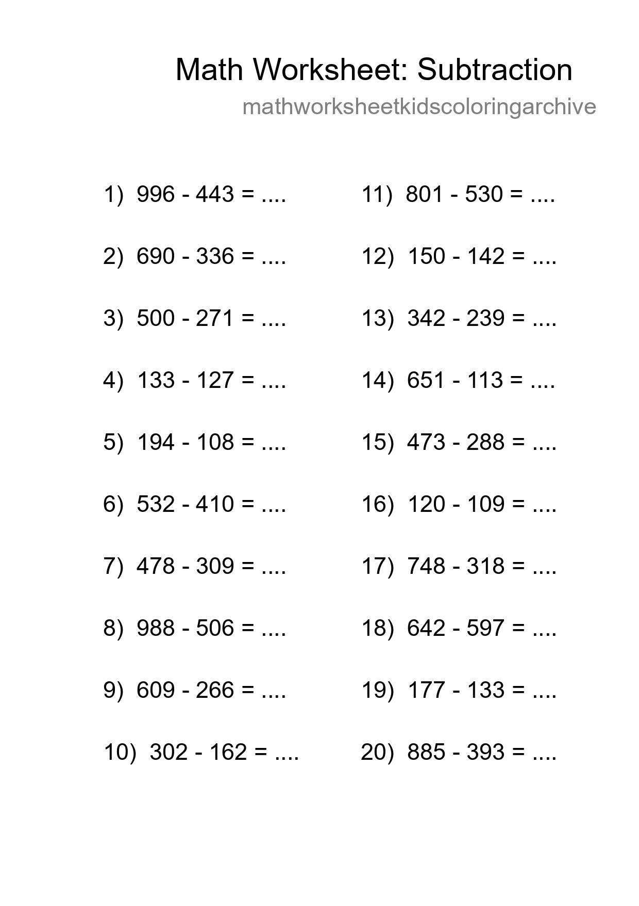
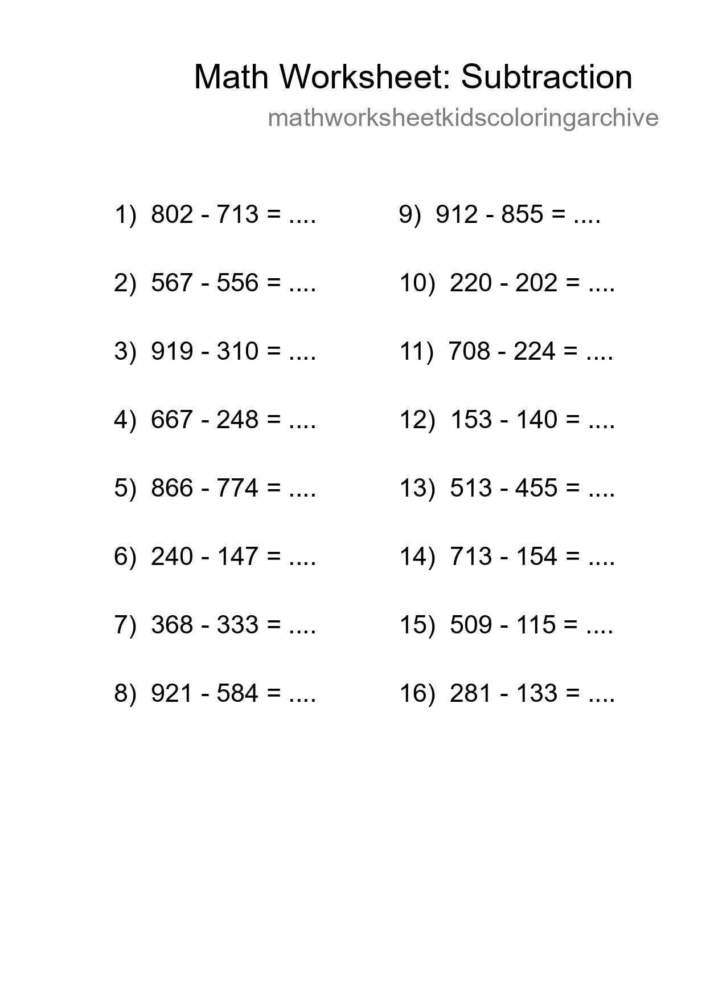
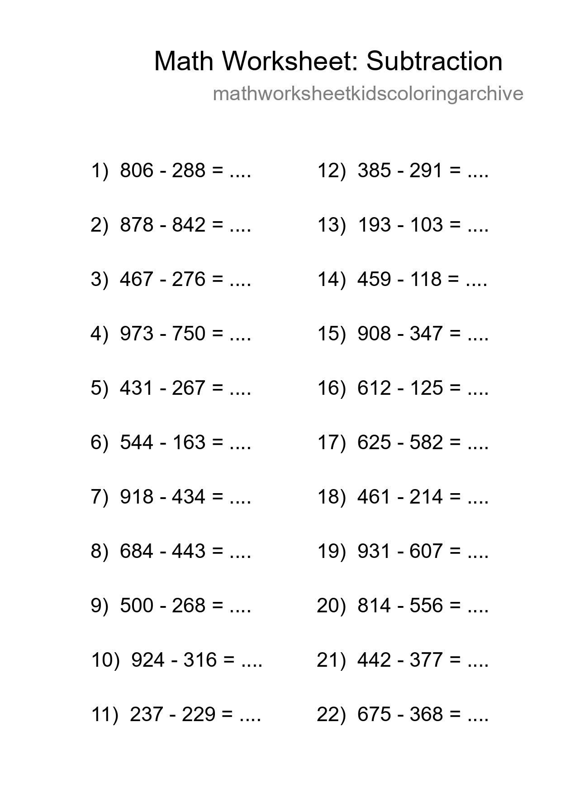
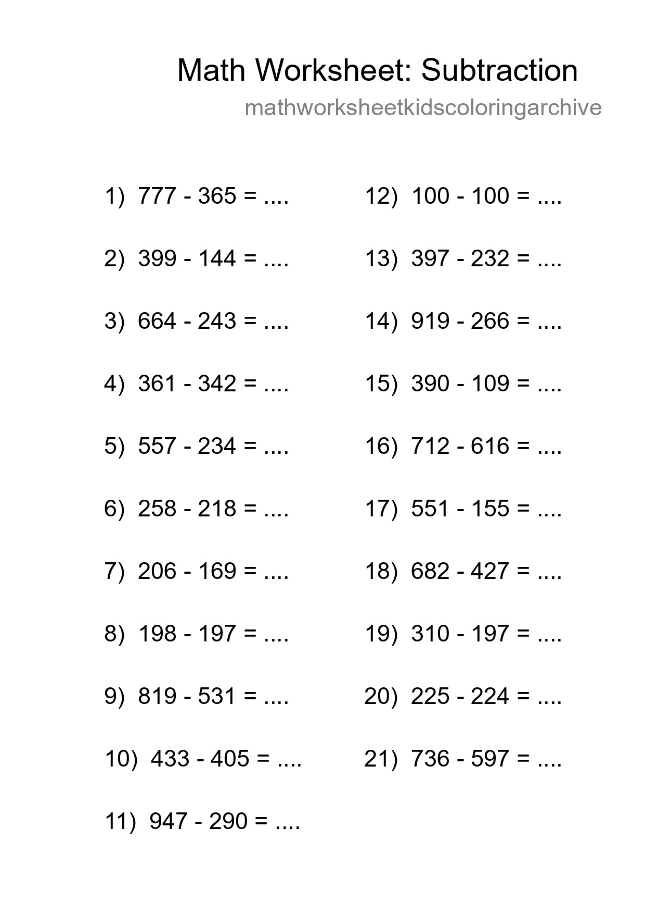
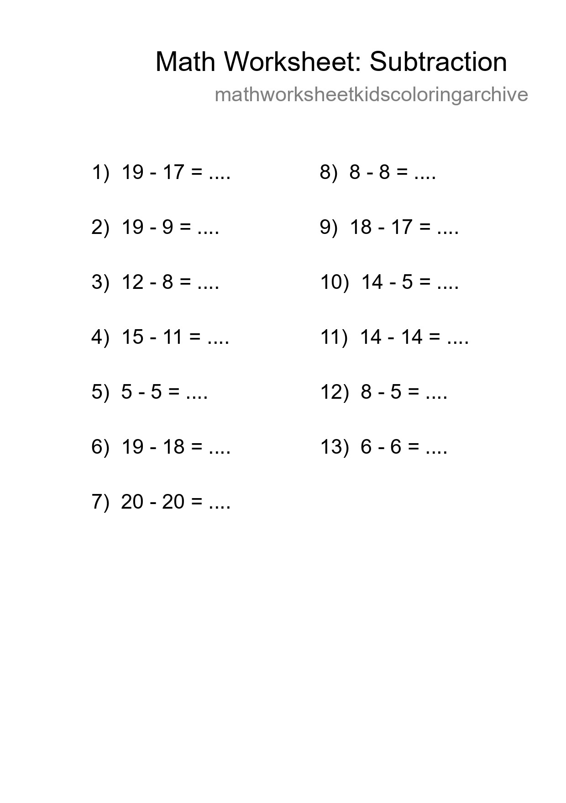
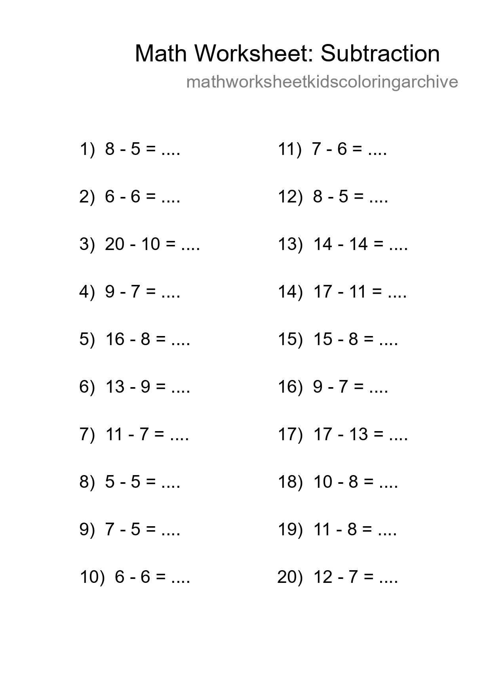
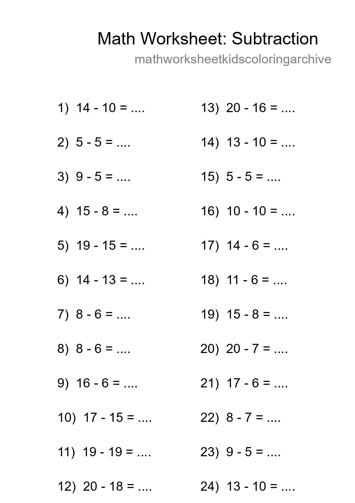
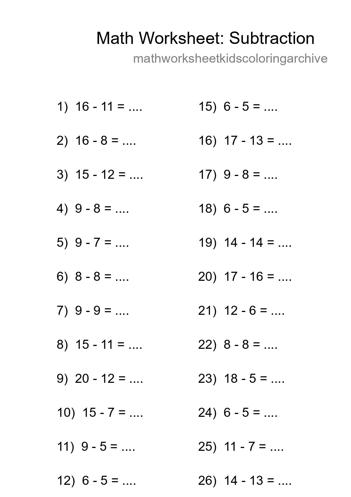

Printable Free 20 Subtraction Math Worksheet For Grade 5 - Part 9

Printable Free 16 Subtraction Math Worksheet For Grade 5 - Part 21

Grade 5 Subtraction Practice Worksheet (22 Problems) - Part 33

Free 21 Subtraction Math Worksheet For Grade 5 - Part 45

Grade 5 Subtraction Practice Worksheet (27 Problems) - Part 57

Free 16 Subtraction Math Worksheet For Grade 3 With Answers - Part 69

Free 11 Subtraction Math Worksheet For Grade 2 - Part 81

Grade 2 Subtraction Practice Worksheet (15 Problems) - Part 93

Free 15 Subtraction Math Worksheet For Grade 2 - Part 105

Grade 2 Subtraction Practice Worksheet (17 Problems) - Part 117

Printable Free 14 Subtraction Math Worksheet For Grade 5 - Part 129

Grade 3 Subtraction Practice Worksheet (27 Problems) - Part 141

Printable Free 13 Subtraction Math Worksheet For Grade 2 - Part 153

Printable Free 20 Subtraction Math Worksheet For Grade 2 - Part 165

Printable Free 24 Subtraction Math Worksheet For Grade 2 - Part 177
